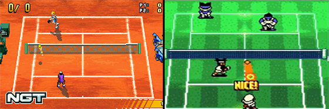

Introduzione
Questo documento nasce dal voler divulgare e riuscire a far comprendere che le simulazioni riguardanti i videogiochi sportivi, in ambiente 2d (ma non solo) per essere trasposte in un'opera videoludica sono soggette a differenze e limitazioni date dal dover riprodurre un modello coerente con quello del mondo reale. In questo documento, infatti, andremo ad analizzare le differenze che ci sono tra un modello fisico semplificato ed un modello fisico reale, ed il perchè non abbiamo bisogno di riprodurre quest’ultimo. Poichè avremo delle limitazioni date dal nostro ambiente virtuale Il compito di un game designer è quindi quello di riuscire a trovare delle meccaniche che portino a delle dinamiche in grado di sostituire quelle più complesse derivanti dal mondo reale. Infine sarà altrettanto importante curare la fase di polishing, cosicché possa restituire un feedback adeguato.
I videogiochi sportivi, in ambiente 2d (ma non solo) per essere trasposti in un'opera videoludica sono soggette a differenze e limitazioni date dal dover riprodurre un modello coerente con quello del mondo reale.
Modelli fisici reali sono complicati
Innanzitutto, cerchiamo di capire il perchè i modelli fisici reali siano complessi e per quale motivo questo sia un problema per la loro trasposizione in un ambiente virtuale. Iniziamo analizzando i principi fondamentali su cui si basa un modello fisico reale, per esempio quello del tennis. Quest’ultimo è uno sport che vede opposti due giocatori (uno contro uno, incontro singolare) o quattro (due contro due, incontro di doppio) in un campo diviso in due metà da una rete alta circa un metro dal terreno. I giocatori utilizzano una racchetta, come se fosse il prolungamento del braccio, al fine di colpire una palla. . Per prima cosa cerchiamo di capire cosa succede nel momento in cui i giocatori colpiscono la pallina. Per far si che l’impatto della pallina sulla racchetta sia il più efficace possibile per un tennista, la pallina dovrà essere colpita all’interno di uno dei due sweet spot. Quest’ultimo è il punto del piatto corde della racchetta che viene sollecitato dalla pallina quando un giocatore ritiene di aver colpito bene la palla; quindi se la pallina non viene colpita in questa zona, il tennista percepirà un impatto poco efficace (la cosiddetta “steccata”). Questo ci fa comprendere che nel modello fisico reale è importante colpire la pallina nel punto giusto. Quando la pallina viene colpita, a seconda della direzione che gli viene data dal giocatore, ottiene una rotazione, che può essere di tre tipi: top spin (nella quale viene impressa una rotazione dall’alto in cui l’asse è orizzontale, in parallelo alla rete), backspin (nella quale viene impressa una rotazione dal basso in cui l’asse è sempre orizzontale ma ruota in senso opposto) e il sidespin (nella quale viene impressa una rotazione laterale in cui l’asse è verticale). Questi tipi di rotazione hanno una conseguenza nel modello fisico reale, perché modificano sia la traiettoria iniziale della pallina sia il conseguente arco generato dal rimbalzo di quest’ultima sul terreno. Quindi grazie alla rotazione impressa alla pallina, il tennista ha a disposizione svariati tipi di colpo, come il diritto, lo smash, il lob, il dropshot, ecc. Come ultima cosa, ma non per importanza, dovremmo anche tenere conto dell'attrito (una forza che si oppone allo scivolamento o rotazione/rotolamento di un corpo su una superficie) della pallina sul campo, che molte volte è influenzato anche dalle condizioni climatiche (per esempio con il vento i giocatori devono stare attenti ad improvvisi cambi di traiettoria da parte della pallina). Un altro fattore in grado di influenzare l’attrito nel modello fisico reale sono le diverse tipologie di terreno su cui andrà ad impattare quest’ultima. Infatti, tralasciando il sintetico ed il cemento che essendo liscio non modifica le forze esercitate durante il gioco, sulla terra battuta il rimbalzo è irregolare e la palla tende a rallentare per via dell’attrito esercitato dall’aria e dall’umidità del terreno, mentre sull’erba la palla ottiene un rimbalzo molto breve per via dell’attrito che è generalmente duro. Tutti questi elementi presi in esame, sono difficili se non impossibili da riprodurre, per via delle limitazioni date dall’utilizzo di un ambiente virtuale. Il compito di un designer starà quindi nello andare a estrapolare gli aspetti fondamentali del gioco, per creare meccaniche che siano il più possibile tendenti al reale non andando così a pregiudicare l’estetica del gioco. Forse è giusto dire che un modello fisico semplificato non pregiudica l’estetica del gioco, perché quest’ultima non è data dalla riproduzione di ogni singolo dettaglio del gioco (come la quantità di fisica riprodotta o dettagli prettamente visivi) ma bensì dalla ricerca di meccaniche o di regole in grado di creare delle dinamiche interessanti che rendano il gioco il più funzionale e divertente possibile.
(La prima immagine, partendo da sinistra, raffigura i tipi di spin, mentre la seconda gli sweet spot)
Identificazione delle dinamiche fisiche principali.
Appurato quindi che non abbiamo bisogno di modelli fisici reali, dobbiamo iniziare a progettare il nostro modello fisico semplificato. Innanzitutto dobbiamo identificare le dinamiche fisiche principali (i punti cardine) da riprodurre nel gioco. Continuando ad utilizzare come esempio il tennis, le cose che dovremmo sicuramente riprodurre sono: le racchettate (cioè i diversi tipi di colpo), lo sweet spot (cioè colpi precisi o meno) ed infine la battuta. Individuati i punti (che ovviamente possono differenziare da gioco a gioco) dobbiamo iniziare a progettare delle meccaniche in grado di riprodurre questi elementi.
Innanzitutto dobbiamo identificare le dinamiche fisiche principali (i punti cardine) da riprodurre nel gioco.
Restituzione delle dinamiche fisiche attraverso modelli semplici
Per creare il nostro modello semplificato, iniziamo con il trovare una meccanica in grado di riprodurre lo sweet spot. Una soluzione potrebbe essere quella di creare due box collider con un bounce contenenti valori diversi, uno più alto uno più basso; in pratica nel momento in cui il giocatore clicca l'input del colpo, parte un'animazione che fa passare prima un collider e poi l’altro. La respinta quindi viene effettuata solo quando la pallina sbatte su uno dei due collider che si viene a creare. Questo procedimento è in grado di riprodurre quindi la dinamica fisica dello sweet spot, dandoci un feedback tendente al reale senza dover per forza creare più punti, con valori diversi, all’interno dello stesso oggetto (la racchetta). Ora proviamo a trovare una soluzione che sia in grado di fornirci dei colpi diversificati tra loro. Un ottimo modo di riprodurli potrebbe essere, agganciandoci al nostro modello semplificato di sweet spot, creare il colpo del lob quando entra all’interno del primo box collider ed un diritto quando entra nell’altro. Per fare questo basterà che al lob assegnamo un bounce che abbia un valore sulla coordinata “y” maggiore, in modo che la pallina ottenga una curva più alta e che quindi, oltre a sembrare più lenta, appaia come un colpo “steccato”; mentre per il dritto assegneremo un valore maggiore alla coordinata “z”, così che la sensazione ottenuta dal colpire la pallina sia quella di un colpo che arriva più lontano ed in maniera più veloce nel campo avversario e che quindi sembri un colpo più efficace. Un’altra cosa importante che dobbiamo creare è sicuramente la battuta. Una soluzione efficace è sicuramente quella di creare una traiettoria/percorso predefinito per la pallina una volta colpita. Per impostare i valori di potenza del colpo, basterà creare una barra di energia che sale e che scende in un breve lasso di tempo, che si fermerà solo quando l’input verrà cliccato dal giocatore; la barra, nel momento in cui verrà fermata, più sarà vicina al suo vertice, più il colpo rilasciato sarà veloce. Questa soluzione, a livello di design è sicuramente in grado di far percepire se la propria battuta sia stata efficace o meno, senza dover andare a creare un intero modello fisico complesso dedicato soltanto alla battuta. Tutti questi elementi ci portano ad avere un modello fisico semplice, che pur non essendo ancora arrivati a trattare la fase di polish, è già in grado di restituirci delle dinamiche fisiche soddisfacenti.
Per creare il nostro modello semplificato.. una soluzione potrebbe essere quella di creare due box collider con un bounce contenenti valori diversi, uno più alto uno più basso.
Elementi che accomunano queste esperienze
Inoltre, può essere una buona tecnica analizzare i punti in comune dei titoli più famosi di quel genere sportivo. In questo documento ho preso in analisi 3 titoli sviluppati in ambiente 2d: “The Prince of Tennis 2004 - Glorious Gold” (per gameboy advance), “Mario Tennis” (per gameboy color), ed infine “Next Generation Tennis” (per gameboy advance). Gli elementi principali che accomunano questi titoli sono sicuramente: la direzione data alla pallina, la potenza della racchettata, il tipo di colpo ed infine il momento in cui la pallina può essere ribattuta. Andando a ritroso, il primo elemento che hanno in comune questi giochi è il fatto che se la pallina abbia superato l’avatar del player, quest’ultimo non ha la possibilità di ribatterla nel campo avversario. Questa cosa, a livello fisico, ci fa comprendere che la pallina sia sempre più veloce dei giocatori. Il secondo elemento che ho analizzato invece, ci fa capire che vengono riprodotti in tutti e tre i giochi i soliti due colpi: il lob e il diritto. La spiegazione di questa soluzione è la stessa che è stata data nel paragrafo precedente. Come terzo elemento in comune troviamo la soluzione adottata per restituire la differenza di potenza tra un colpo e l’altro. Quest’ultima ci viene fatta intendere analizzando la pallina, che può essere colpita in tre momenti diversi, ed in base ad essi la pallina ottiene un velocità diversa. Quindi ho notato che appena la palla entra all’interno del collider o se la colpisco troppo tardi,quest’ultima abbia una velocità normale; mentre nel momento in cui la colpisco quando il movimento del colpo è al secondo stadio, il colpo prende una maggiore velocità. Questa trovata è una variante alla soluzione da me inserita in precedenza per ricreare in maniera più semplice la meccanica dello sweet spot. Il quarto ed ultimo elemento che ho trovato in comune fra questi titoli è il metodo con la quale viene data la possibilità al giocatore di direzionare la pallina quando viene colpita. In maniera molto semplice, la direzione viene impostata dalla direzione nella quale muoveremo il thumbstick, all’interno di un piccolissimo delay (un momento in cui la pallina sembra si fermi) nell’attimo in cui colpiamo la pallina. Questa soluzione ci permette in modo semplice di direzionare la pallina, senza doverci preoccupare di tutti quegli aspetti che condizionano nella realtà (come può essere il momento dell’impatto, l’attrito oppure l'intensità con la quale viene colpita la palla) la respinta precisa della pallina. Questa analisi, oltre a fornirci qualche spunto su quali meccaniche creare, ci fa soprattutto intendere che nessun gioco cerca di riprodurre un modello fisico reale, ma al contrario ci fa capire l’importanza della ricerca di un modello fisico semplificato.
Gli elementi principali che accomunano questi titoli sono sicuramente: la direzione data alla pallina, la potenza della racchettata, il tipo di colpo ed infine il momento in cui la pallina può essere ribattuta.
Il polishing
Come ultima cosa, per rafforzare il game feel e restituire al giocatore feedback migliori riguardo al modello fisico semplificato, dovremo lavorare sul polishing. Nelle simulazioni di tennis, vengono utilizzate varie tecniche (che possono essere visive o sonore) atte a svolgere la funzione di “escamotage”, perchè in questo modo si rendono più chiare determinate situazioni o elementi di gioco. Un esempio è sicuramente quello, nel caso in cui non ci sia una terza coordinata, quello di far si di far avvicinare la telecamera alla pallina, quando passa sopra la rete, per dare la sensazione che quest’ultima si alzi avendo così una specie di parabola. Un altro elemento di polishing spesso utilizzato per rendere più chiaro sia il percorso sia la velocità della pallina è sicuramente quello di creare una scia che segue quest’ultima; spesso e volentieri più è lunga o grande la scia, più avremo la sensazione che la pallina vada velocemente. Il prossimo elemento, che possiamo trovare in maniera abbastanza ricorrente è quello che ci rende chiaro lo sweet spot (il colpire bene o male la pallina). Quest’ultimo è principalmente rappresentato in due modi diversi, a seconda del gioco a cui stiamo giocando. Il primo modo, nel caso in cui colpissimo bene la pallina, abbina il suono di un buon colpo con un segno visivo (spesso sono delle linee intorno alla pallina nel momento del colpo) solitamente di colore verde, mentre, nel caso la pallina venga colpita male, abbinato al suono di una steccata (o comunque un segnale sonoro negativo) vi è un segno visivo comunemente di colore rosso. l’altro modo, è quello in cui se colpiamo bene la palla, oltre al segnale sonoro positivo, l’avatar viene colorato di verde, mentre, se la pallina viene colpita male, oltre a più volte citato segnale sonoro (in questo caso negativo), l’avatar viene colorato di rosso. L’ultimo elemento di polish che vorrei inserire in questo documento è quello che ci rende chiara sia la posizione della palla sia la posizione del nostro giocatore. Questo elemento è fondamentale per far intuire al giocatore il giusto momento per colpire la pallina. Quest’ultimo viene rappresentato spesso in modi diversi, ma generalmente si tende a creare delle ombre sia intorno all’avatar sia intorno alla pallina.
(Entrambe le immagini mostrano la scia della pallina. - Next generation Tennis, Mario tennis)
(Entrambe le immagini mostrano la barra caricata per la battuta. - Next generation Tennis, Roland Garros 02)
Conclusione
Riassumendo tutti gli esempi fatti fino ad ora, siamo in grado dire che abbiamo un modello fisico semplificato. La struttura dedicata alla creazione di quest’ultimo quindi si divide in tre fasi: identificazione delle dinamiche fisiche principali, ricerca di elementi che accomunano le varie simulazioni di quel genere ed infine la fase di polishing. Questa struttura è utilizzabile non solo per la creazione di un modello fisico semplificato dedicato alla simulazione del tennis, ma anche per qualsiasi altra simulazione di un gioco che può essere sia sportivo sia non sportivo. In conclusione possiamo affermare che i modelli fisici reali sono troppo complessi da ricreare all’interno di un ambiente virtuale e che quindi non ne abbiamo necessariamente bisogno.